Fase 1 · rodada 5 · o chão e a morte do chefão
20/10/2026 · ← todas as rodadas · As suas duas pinturas viraram o chão da fase: o Vale atrás, a Paisagem na frente dele, as estruturas plantadas entre a Paisagem e uma faixa de entulho, e um primeiro plano na frente da nave. A cordilheira recortada e o ladrilho do chão saíram. A morte do chefão ficou maior e mais violenta. As estruturas ainda são as antigas (claras, com contorno): elas são a próxima rodada.
Os ajustes do seu retorno
1 · A cadência de tons
Você viu certo: medido na tela (cada plano só onde nenhum outro o cobre), o Vale e a Paisagem estavam MAIS CLAROS que a pintura atrás deles. As colinas enevoadas do Vale chegavam a 75 de brilho entre planos de 17 a 31. Cada plano foi re-tonalizado no assado com uma curva de brilho (o matiz fica, as brasas e os fogos ficam como estão, porque são luz e não rocha), um degrau mais escuro por plano. A aresta do entulho e a do primeiro plano também desceram.
| brilho (mediana / 90%) | antes | agora |
|---|---|---|
| a pintura da cidadela | 17 / 42 | 17 / 42 |
| o Vale | 24 / 75 | 14 / 31 |
| a Paisagem | 31 / 51 | 12 / 23 |
| o entulho da frente | 12 / 40 | 7 / 17 |
| o primeiro plano | 8 / 27 | 5 / 14 |
A conta virou uma checagem (`scripts/_g/_cadencia-chao.mjs`): ela reprova se algum plano ficar mais claro que o de trás.
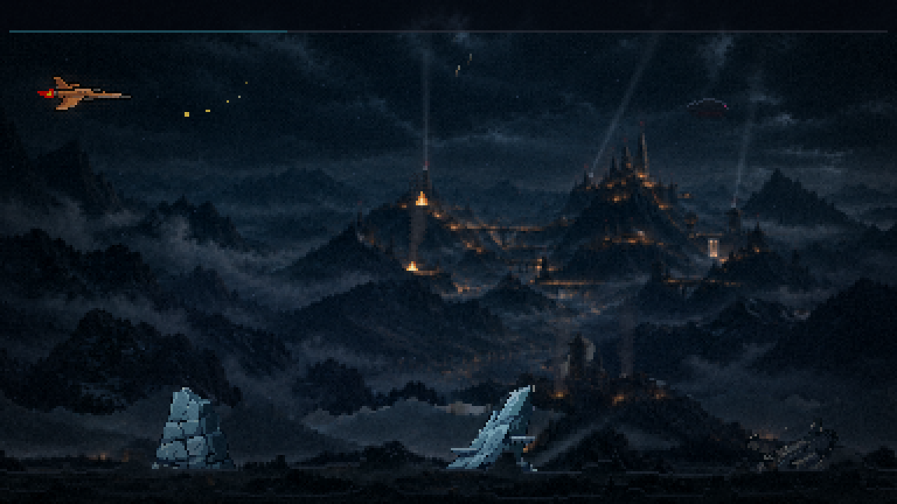

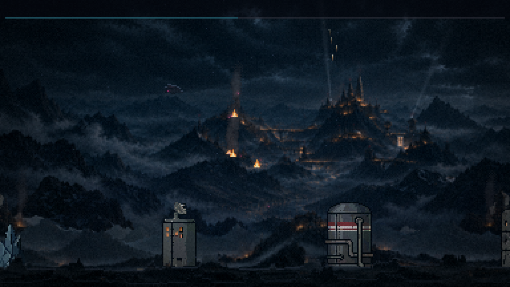
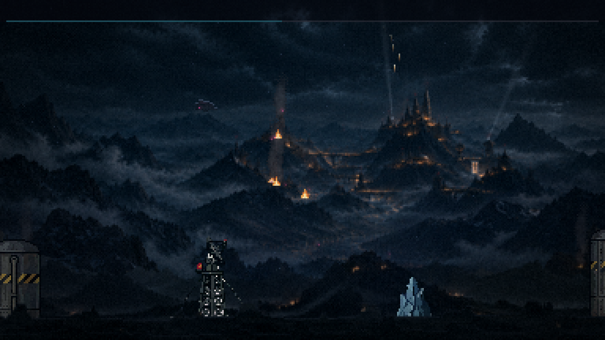
2 · A parede na fumaça da explosão
A causa: na cena final a nuvem da queda do Leviatã passa da borda da tela, e do quadro 10 ao 42 a folha original sai cortada reta no lado direito. Como o jogo espelha a explosão metade das vezes, o corte aparecia à esquerda também. Agora a nuvem se DESFAZ antes do corte, em fumaça irregular (um ruído quebra o desvanecer, para não virar degradê). O desfazer só entra quando a nuvem chega à borda, então a bola de fogo do começo não é tocada. E a explosão passou a nascer no centro da bola de fogo, não no meio do quadro. Vale para a morte, para a cadeia e para a poeira da decolagem, que usam a mesma arte.
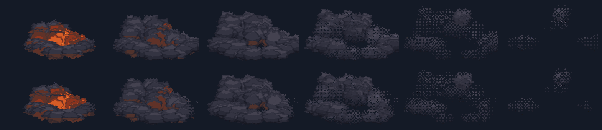
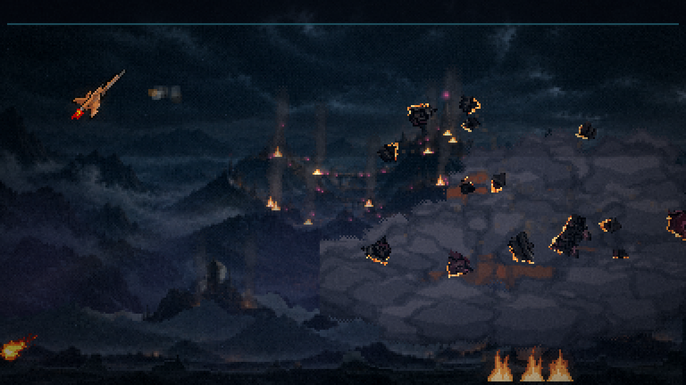
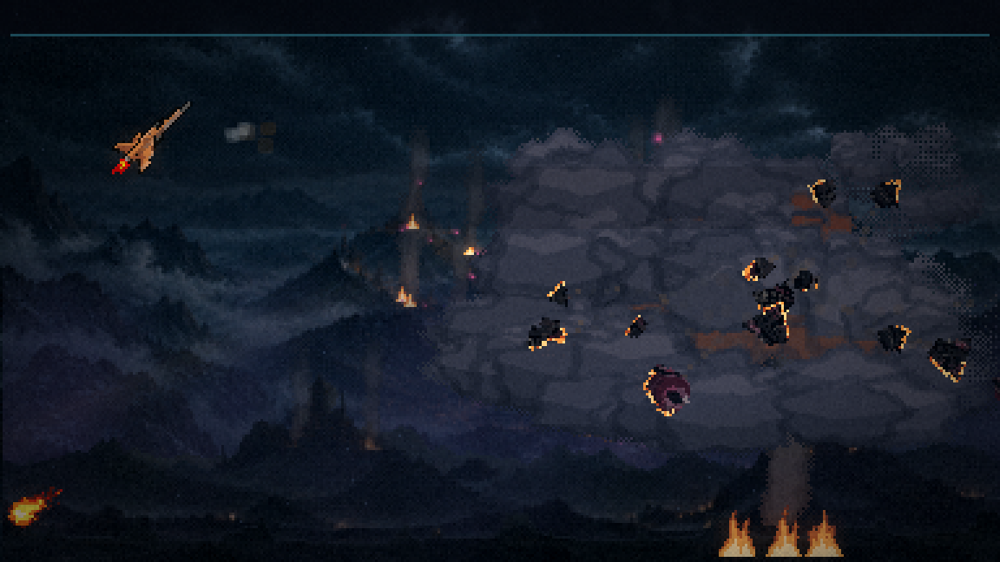
A fase, em velocidade real
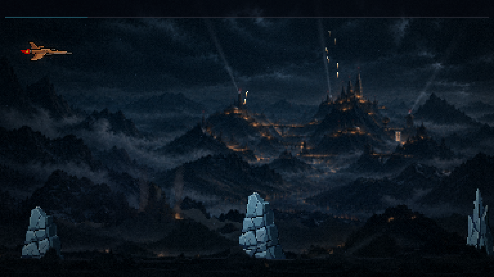
Como as camadas se empilham
| de trás para a frente | velocidade | o que é |
|---|---|---|
| a pintura da cidadela | deriva 45 px na fase | a rodada 1 e a invasão da rodada 2, como você aprovou |
| o Vale | 0,3 do mundo | a sua "Valle Industrial Devastado": as colinas enevoadas e as torres arruinadas |
| a bruma | 0,4 | passa entre o Vale e a Paisagem |
| a Paisagem | 0,5 | a sua "Paisagem Montanhosa Sombria com Brasas": o chão em que as estruturas pisam |
| a névoa rasteira | 0,75 | a de antes, na cor da névoa da pintura |
| as estruturas | 1 (o mundo) | o pé sorteado numa faixa de 10 px (y 204 a 213), sem dois vizinhos na mesma altura, e quem está mais à frente desenha por cima: a técnica que tirou o "colado" do casco da F3 |
| o entulho da frente | 1,15 | quase preto, cobre o pé de todas as estruturas e passa na frente delas; fica atrás da nave |
| a nave | ||
| o primeiro plano | 1,5 | o entulho espelhado, mais baixo e mais escuro: só as pontas aparecem rente ao rodapé. Some na luta do chefão e com um elite em cena, como o de antes |
Na saída da atmosfera, o chão cai em parallax: o Vale desce 40 px, a Paisagem 60, o entulho 90 e o primeiro plano 110, enquanto se apagam.
As suas pinturas, sem emenda
Cada pintura entrou INTEIRA, reduzida como a da cidadela (429 de largura), e virou uma faixa que se repete sem emenda: o fim de cada uma se sobrepõe ao começo e um corte de menor diferença, linha por linha, decide onde um vira o outro. Abaixo, cada faixa duas vezes seguidas: o tique branco embaixo marca a junta.
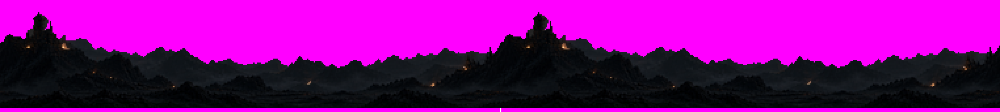
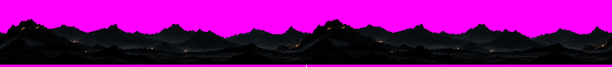
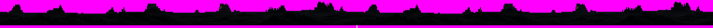
a ordem das duas (você escolheu a A)
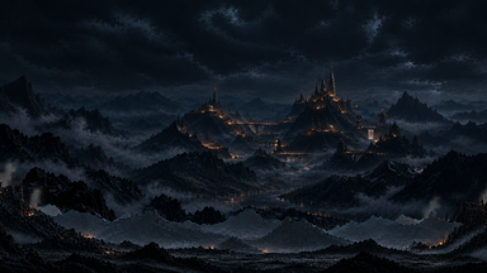
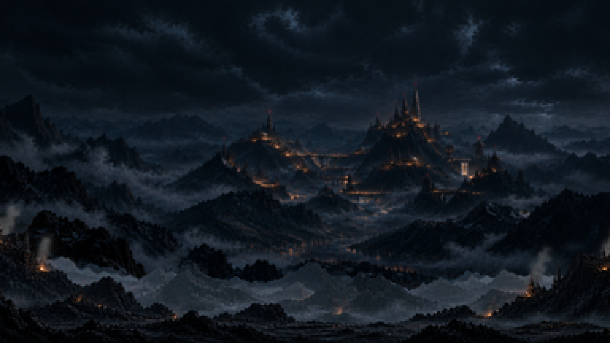
Vivo: as brasas e a fumaça
A técnica do menu: as luzes quentes das duas pinturas (8 no Vale, 12 na Paisagem) foram tiradas por difusão e divididas em três terços. Cada terço tremula no seu ritmo, nunca em uníssono e nunca apagando de todo. Dos dois fogos maiores, nas torres do Vale, sobe a coluna de fumaça da invasão, presa à faixa.
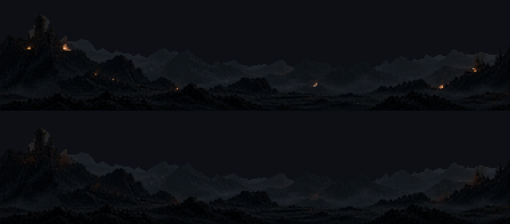
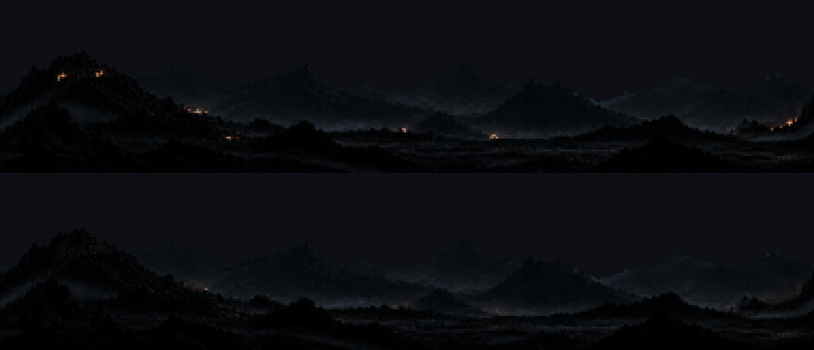
A saída da atmosfera
A morte do chefão, maior e mais violenta
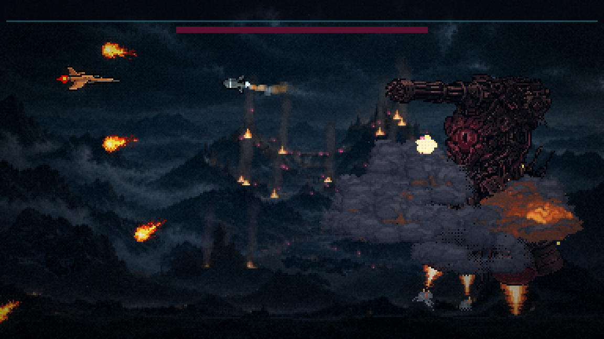
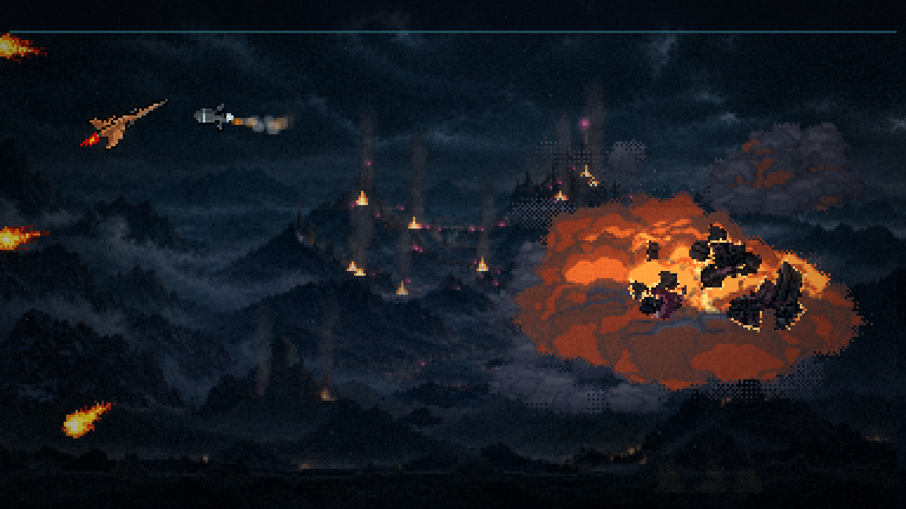
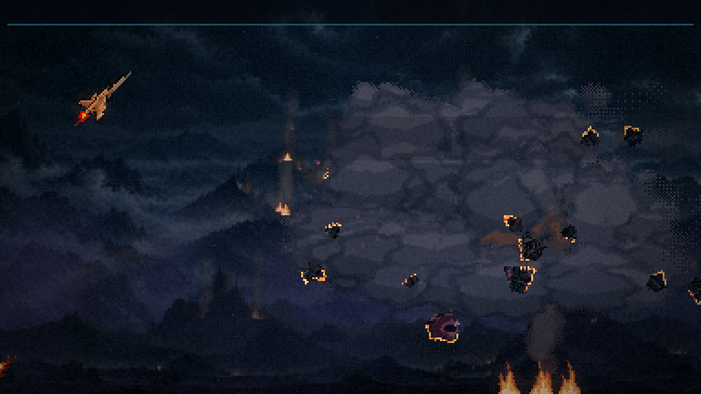
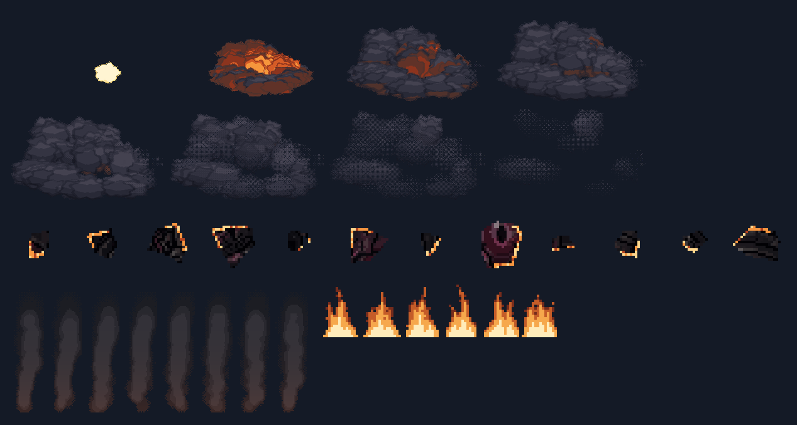
O que você decide
- O chão: as faixas, as velocidades, a altura do entulho da frente, o primeiro plano contínuo (no lugar das rochas espaçadas).
- As brasas e a fumaça: a força do tremular, a fumaça das torres do Vale.
- A morte do chefão: o tamanho, a cadeia, os estilhaços, o incêndio.
- As estruturas (a próxima rodada): refeitas escuras, sem contorno, com as suas pinturas como referência de estilo.